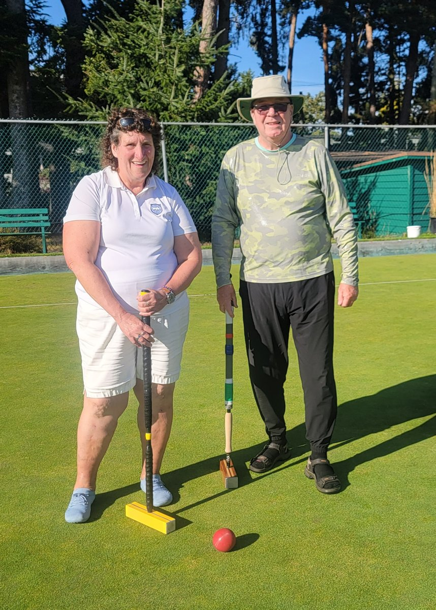
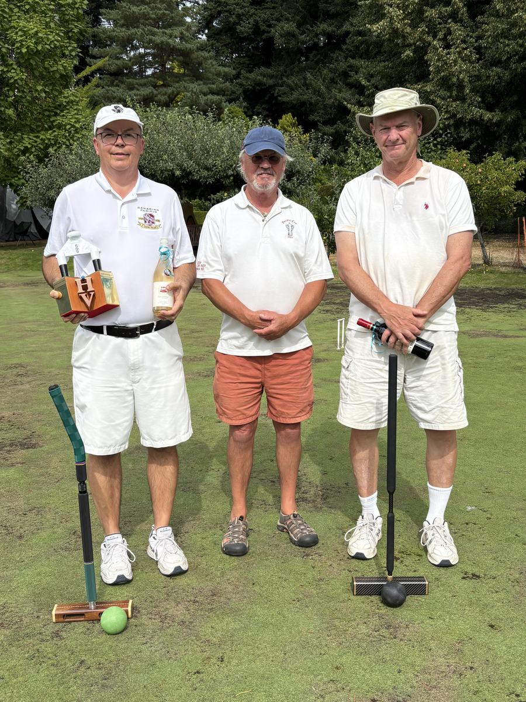
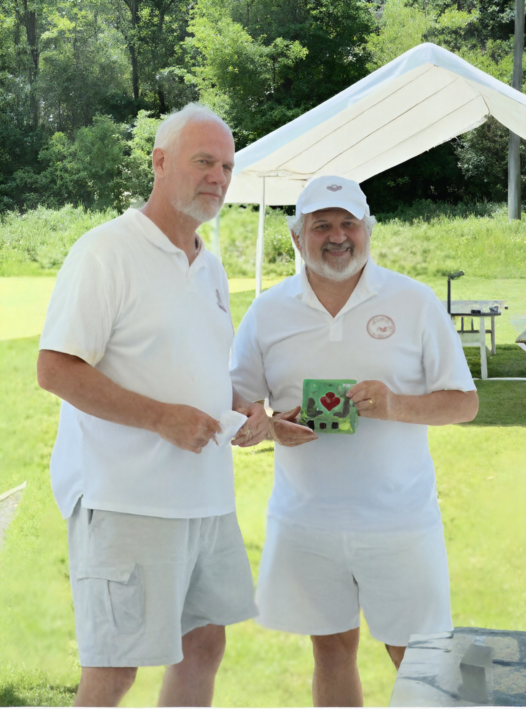

August 2026 · Tournament Result
Abbotsford Club Member Wins Western Canada Open Golf Croquet Doubles
Abbotsford Croquet Club member Jorn Soegard, partnered with Sandy Hodel of the Victoria Bowls and
Croquet Club, won the doubles at the 2026 Western Canada Open Golf Croquet tournament, held
August 22–24 at the Victoria Bowls and Croquet Club in Beacon Hill Park, Victoria, BC.

Doubles champions Sandy Hodel and Jorn Soegard at the 2026 Western
Canada Open Golf Croquet, Victoria, BC.
Tournament Details
August 2026 · Tournament Result
Abbotsford Club Member Takes Second at Happy Valley Eight Invitational
Abbotsford Croquet Club member Michael Kernaghan finished runner-up at the Happy Valley Eight
Invitational, held August 6–9, 2026 at Happy Valley Croquet Club in Metchosin, BC.
Kernaghan reached the final before losing to tournament winner Chris Percival Smith.

Left to right: winner Chris Percival Smith, tournament director Michael
Dowling, and runner-up Michael Kernaghan at the 2026 Happy Valley Eight Invitational,
Metchosin, BC.
Tournament Details
June 2026 · National Championship
Abbotsford Club Member Wins National Championship A Flight
Abbotsford Croquet Club member Michael Kernaghan won the A Flight at the 2026 Croquet Canada
National Championship, held June 4–7 in Bayfield, Ontario.

Prize presentation at the 2026 Croquet Canada National Championship,
Bayfield, Ontario.
Tournament Details